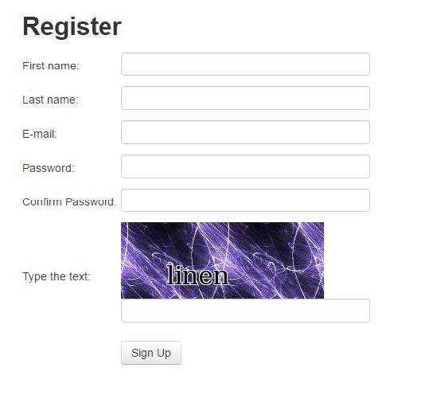
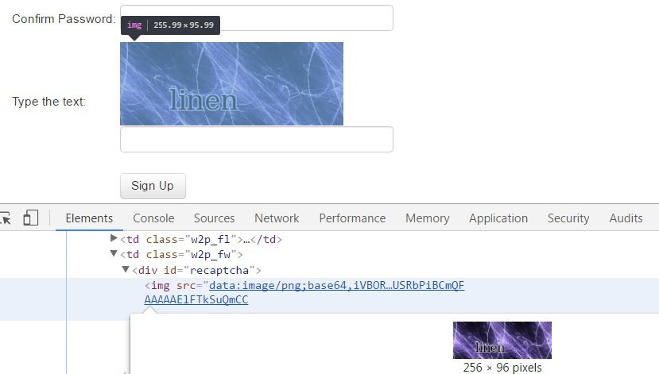

{Pillow与PIL的对比} Pillow是知名的Python图像处理库（Python Image Library，PIL）的分支版本，不过PIL从2009年开始就没有再更新过。Pillow使用了和原始PIL包相同的接口，并且拥有完善的文档，其文档地址为http://pillow.readthedocs.org。Pillow支持Python3（PIL不支持），因此我们将在本书中聚焦于使用Pillow。
验证码（CAPTCHA）的全称为全自动区分计算机和人类的公开图灵测试（Completely Automated Public Turing test to tell Computersand Humans Apart）。从其全称可以看出，验证码用于测试用户是否为真实人类。一个典型的验证码由扭曲的文本组成，此时计算机程序难以解析，但人类仍然可以（希望如此）阅读。
许多网站使用验证码来防御与其网站交互的机器人程序。比如许多银行网站强制每次登录时都需要输入验证码，这就令人十分痛苦。本章将介绍如何自动化处理验证码问题，首先使用光学字符识别（Optical Character Recognition，OCR），然后使用一个验证码处理API。
在本章中，我们将会介绍如下主题。
在第6章处理表单时，我们使用手工创建的账号登录网站，而忽略了创建账号这一部分，这是因为注册表单需要输入验证码，如图7.1所示。

图7.1
请注意，每次加载表单时都会显示不同的验证码图像。为了了解表单需要哪些参数，我们可以复用上一章编写的parse_form()函数。
>>> import requests
>>> REGISTER_URL = 'http://example.python-scraping.com/user/register'
>>> session = requests.Session()
>>> html = session.get(REGISTER_URL)
>>> form = parse_form(html.content)
>>> form
{'_formkey': '1ed4e4c4-fbc6-4d82-a0d3-771d289f8661',
'_formname': 'register',
'_next': '/',
'email': '',
'first_name': '',
'last_name': '',
'password': '',
'password_two': None,
'recaptcha_response_field': None}前面的代码中，除recaptcha_response_field之外的其他域都很容易处理，在本例中这个域要求我们从初始页面显示的图像中抽取出strange字符串。
在分析验证码图像之前，首先需要从表单中获取该图像。通过浏览器工具可以看到，图像数据是嵌入在网页中的，而不是从其他URL加载过来的，如图7.2所示。

图7.2
为了在Python中处理该图像，我们将会用到Pillow包，可以使用如下命令通过pip安装该包。
pip install Pillow安装Pillow的其他方法可以参考http://pillow.readthedocs.io/en/latest/installation.html。
Pillow提供了一个便捷的Image类，其中包含了很多用于处理验证码图像的高级方法。下面的函数使用注册页的HTML作为输入参数，返回包含验证码图像的Image对象。
from io import BytesIO
from lxml.html import fromstring
from PIL import Image
import base64
def get_captcha_img(html):
tree = fromstring(html)
img_data = tree.cssselect('div#recaptcha img')[0].get('src')
img_data = img_data.partition(',')[-1]
binary_img_data = base64.b64decode(img_data)
img = Image.open(BytesIO(binary_img_data))
return img开始几行使用lxml从表单中获取图像数据。图像数据的前缀定义了数据类型。在本例中，这是一张进行了Base64编码的PNG图像，这种格式会使用ASCII编码表示二进制数据。我们可以通过在第一个逗号处分割的方法移除该前缀。然后，使用Base64解码图像数据，回到最初的二进制格式。要想加载图像，PIL还需要一个类似文件的接口，所以在传给Image类之前，我们又使用了BytesIO对这个二进制数据进行了封装。
在得到这个格式更加合适的验证码图像后，我们就可以尝试从中抽取文本了。
{Pillow与PIL的对比}
Pillow是知名的Python图像处理库（Python Image Library，PIL）的分支版本，不过PIL从2009年开始就没有再更新过。Pillow使用了和原始PIL包相同的接口，并且拥有完善的文档，其文档地址为http://pillow.readthedocs.org。Pillow支持Python3（PIL不支持），因此我们将在本书中聚焦于使用Pillow。
光学字符识别（Optical Character Recognition，OCR）用于从图像中抽取文本。本节中，我们将使用开源的Tesseract OCR引擎，该引擎最初由惠普公司开发，目前由Google主导。Tesseract的安装说明可以从https://github.com/tesseract-ocr/tesseract/wiki/获取。然后，可以使用pip安装其Python封装版本pytesseract。
pip install pytesseract如果直接把验证码原始图像传给pytesseract，解析结果一般都会很糟糕。
>>> import pytesseract
>>> img = get_captcha_img(html.content)
>>> pytesseract.image_to_string(img)
''上面的代码执行后，会返回一个空字符串[1]，也就是说Tesseract在抽取输入图像中的字符时失败了。这是因为Tesseract的设计初衷是为了抽取更加典型的文本，比如背景统一的书页。如果我们想要更加有效地使用Tesseract，需要先修改验证码图像，去除其中的背景噪音，只保留文本部分。
为了更好地理解我们将要处理的验证码系统，图7.3中又给出了几个示例验证码。
图7.3
从图7.3中的例子可以看出，验证码文本一般都是黑色的，背景则会更加明亮，所以我们可以通过检查像素是否为黑色将文本分离出来，该处理过程又被称为阈值化。通过Pillow可以很容易地实现该处理过程。
>>> img.save('captcha_original.png')
>>> gray = img.convert('L')
>>> gray.save('captcha_gray.png')
>>> bw = gray.point(lambda x: 0 if x < 1 else 255, '1')
>>> bw.save('captcha_thresholded.png')首先，我们使用convert方法把图像转为灰度图。然后，使用point命令，通过lambda函数映射图像，此时会遍历图像中的每个像素。在lambda函数中，只有阈值小于1的像素才会保留，也就是说只有全黑的像素才会保留下来。这段代码片段保存了3张图像，分别是原始验证码图像、转换后的灰度图以及阈值化处理后的图像。
最终图像中的文本更加清晰，此时我们就可以将其传给Tesseract进行处理了。
>>> pytesseract.image_to_string(bw)
'strange'成功了！验证码中的文本已经被成功抽取出来了。在我测试的100张图片中，该方法正确解析了其中的82张验证码图像。
由于示例文本总是小写的ASCII字符，因此我们可以将结果限定在这些字符中，从而进一步提高性能。
>>> import string
>>> word = pytesseract.image_to_string(bw)
>>> ascii_word = ''.join(c for c in word.lower() if c in
string.ascii_lowercase)在对相同的100张图片的测试中，其识别率提高到了88%。
下面是目前注册脚本的完整代码。
import requests
import string
import pytesseract
from lxml.html import fromstring
from chp6.login import parse_form
from chp7.image_processing import get_captcha_img, img_to_bw
REGISTER_URL = 'http://example.python-scraping.com/user/register'
def register(first_name, last_name, email, password):
session = requests.Session()
html = session.get(REGISTER_URL)
form = parse_form(html.content)
form['first_name'] = first_name
form['last_name'] = last_name
form['email'] = email
form['password'] = form['password_two'] = password
img = get_captcha_img(html.content)
captcha = ocr(img)
form['recaptcha_response_field'] = captcha
resp = session.post(html.url, form)
success = '/user/register' not in resp.url
if not success:
form_errors = fromstring(resp.content).cssselect('div.error')
print('Form Errors:')
print('n'.join(
(' {}: {}'.format(f.get('id'), f.text) for f in
form_errors)))
return success
def ocr(img):
bw = img_to_bw(img)
captcha = pytesseract.image_to_string(bw)
cleaned = ''.join(c for c in captcha.lower() if c in
string.ascii_lowercase)
if len(cleaned) != len(captcha):
print('removed bad characters: {}'.format(set(captcha) -
set(cleaned)))
return cleanedregister()函数下载注册页面，抓取其中的表单，并在表单中设置新账号的名称、邮箱地址和密码。然后抽取验证码图像，传给OCR函数，并将OCR函数产生的结果添加到表单中。接下来提交表单数据，检查响应URL，确认注册是否成功。
如果注册失败（没有正确重定向到主页），将会打印出表单错误信息，比如我们可能需要使用更长的密码、不同的邮箱或验证码输入错误。我们还打印了移除的字符，用于帮助调试，使我们的验证码解析器更好。这些日志可能有助于我们识别常见的OCR错误，比如误将1认为l或类似的错误，这就需要在相似的字符间进行更完美的区分。
现在，只需要使用新账号信息调用register()函数，就可以注册账号了。
>>> register(first_name, last_name, email, password)
True要想进一步改善验证码OCR的性能，下面还有一些可能会使用到的方法：
如果你对改善性能的实验感兴趣，可以使用本书源码文件中的示例数据，它位于data/captcha_samples文件夹中。此外，还有一个脚本用于测试其准确度，它位于本书源码文件的chp7文件夹中，其名为test_samples。不过，对于我们注册账号这一目的，目前88%的准确率已经足够了，这是因为即使是真实用户也会在输入验证码文本时出现错误。实际上，即使10%的准确率也是足够的，因为脚本可以运行多次直至成功，不过这样做对服务器不够友好，甚至可能会导致IP被封禁。
前面用于测试的验证码系统相对来说比较容易处理，因为文本使用的黑色字体与背景很容易区分，而且文本是水平的，无须旋转就能被Tesseract准确解析。一般情况下，网站使用的都是类似这种比较简单的通用验证码系统，此时可以使用OCR方法。但是，如果网站使用的是更加复杂的系统，比如Google的reCAPTCHA，OCR方法则需要花费更多努力，甚至可能无法使用。
在这些例子中，因为文本被置于不同的角度，并且拥有不同的字体和颜色，所以要使OCR方法准确的话，需要更多工作来清理以及预处理这些图像。这些高级验证码，甚至有时连人类都很难解析，对于一个简单的脚本来说就更加困难了。
为了处理这些更加复杂的图像，我们将使用验证码处理服务[2]。验证码处理服务有很多，比如2Paptcha网站和DeCaptcher网站，其服务价位为1000个验证码图像0.5美元～2美元不等。当把验证码图像传给验证码解析API时，会有人进行人工查看，并在HTTP响应中给出解析后的文本，一般来说该过程在30秒以内。
在本节的示例中，我们将使用9kw.eu的服务。虽然该服务没有提供最便宜的验证码处理价格，也没有最好的API设计，但是使用该API可能不需要花钱。这是因为9kw.eu允许用户人工处理验证码来获取积分，然后花费这些积分处理我们的验证码。
要想开始使用9kw，首先需要创建一个账号，注册网址为https://www.9kw.eu/register.html。
然后，按照账号确认说明进行操作。登录后，我们被定位到https://www.9kw.eu/usercaptcha.html。
在本页中，需要处理其他用户的验证码来获取后面使用API时所需的积分。在处理了几个验证码之后，会被定位到https://www.9kw.eu/index.cgi?action=userapinew&source=api来创建API key。
9kw的API文档地址为https://www.9kw.eu/api.html#apisubmit-tab。我们用于提交验证码和检查结果的主要部分总结如下。
如果想要提交要解析的验证码，可以使用该API方法及参数。
URL：https://www.9kw.eu/index.cgi （POST）
apikey：你的API key
action：必须设为“usercaptchaupload”
file-upload-01：需要处理的图像（文件、url或字符串）
base64：如果输入是Base64编码，则设为“1”
maxtimeout：等待处理的最长时间（必须为60～3999秒）
selfsolve：如果自己处理该验证码，则设为“1”
json：如果要以JSON格式接收响应，则设为“1”
API返回值：该验证码的ID如果想要请求已提交验证码的结果，需要使用不同的API方法和参数。
URL：https://www.9kw.eu/index.cgi （GET）
apikey：你的API key
action：必须设为“usercaptchacorrectdata”
id：要检查的验证码ID
info：若设为1，没有得到结果时返回“NO DATA”（默认返回空）
json：如果要以JSON格式接收响应，则设为“1”
API返回值：要处理的验证码文本或错误码此外，API还有一些错误代码。
0001 API key不存在
0002 没有找到API key
0003 没有找到激活的API key
……
0031 账号被系统禁用24小时
0032 账号没有足够的权限
0033 需要升级插件下面是发送验证码图像到该API的初始实现代码。
import requests
API_URL = 'https://www.9kw.eu/index.cgi'
def send_captcha(api_key, img_data):
data = {
'action': 'usercaptchaupload',
'apikey': api_key,
'file-upload-01': img_data,
'base64': '1',
'selfsolve': '1',
'maxtimeout': '60',
'json': '1',
}
response = requests.post(API_URL, data)
return response.content这个结构应该看起来很熟悉，首先我们创建了一个所需参数的字典，对其进行编码，然后将该数据作为请求体提交。需要注意的是，这里将selfsolve选项设为'1'，这种设置下，如果我们正在使用9kw的Web界面处理验证码，那么验证码图像就会传给我们自己处理，从而可以节约我们的积分。如果此时我们没有处于登录状态，验证码则会传给其他用户。
下面是获取验证码图像处理结果的代码。
def get_captcha_text(api_key, captcha_id):
data = {
'action': 'usercaptchacorrectdata',
'id': captcha_id,
'apikey': api_key,
'json': '1',
}
response = requests.get(API_URL, data)
return response.content9kw的API的一个缺点是，错误信息是在与结果相同的JSON字段中传输的，这样就会使它们的区分更加复杂。例如，此时没有用户处理验证码图像，则会返回ERROR NO USER字符串。不过幸好我们提交的验证码图像永远不会包含这类文本。
另一个困难是，只有在其他用户有时间人工处理验证码图像时，get_captcha_text()函数才能返回错误信息，正如之前提到的，通常要在30秒之后。
为了使实现更加友好，我们将会增加一个封装函数，用于提交验证码图像以及等待结果返回。下面的扩展版本代码把这些功能封装到一个可复用类当中，另外还增加了检查错误信息的功能。
import base64
import re
import time
import requests
from io import BytesIO
class CaptchaAPI:
def __init__(self, api_key, timeout=120):
self.api_key = api_key
self.timeout = timeout
self.url = 'https://www.9kw.eu/index.cgi'
def solve(self, img):
"""Submit CAPTCHA and return result when ready"""
img_buffer = BytesIO()
img.save(img_buffer, format="PNG")
img_data = img_buffer.getvalue()
captcha_id = self.send(img_data)
start_time = time.time()
while time.time() < start_time + self.timeout:
try:
resp = self.get(captcha_id)
except CaptchaError:
pass # CAPTCHA still not ready
else:
if resp.get('answer') != 'NO DATA':
if resp.get('answer') == 'ERROR NO USER':
raise CaptchaError(
'Error: no user available to solve CAPTCHA')
else:
print('CAPTCHA solved!')
return captcha_id, resp.get('answer')
print('Waiting for CAPTCHA ...')
time.sleep(1)
raise CaptchaError('Error: API timeout')
def send(self, img_data):
"""Send CAPTCHA for solving """
print('Submitting CAPTCHA')
data = {
'action': 'usercaptchaupload',
'apikey': self.api_key,
'file-upload-01': base64.b64encode(img_data),
'base64': '1',
'selfsolve': '1',
'json': '1',
'maxtimeout': str(self.timeout)
}
result = requests.post(self.url, data)
self.check(result.text)
return result.json()
def get(self, captcha_id):
"""Get result of solved CAPTCHA """
data = {
'action': 'usercaptchacorrectdata',
'id': captcha_id,
'apikey': self.api_key,
'info': '1',
'json': '1',
}
result = requests.get(self.url, data)
self.check(result.text)
return result.json()
def check(self, result):
"""Check result of API and raise error if error code"""
if re.match('00dd w+', result):
raise CaptchaError('API error: ' + result)
def report(self, captcha_id, correct):
""" Report back whether captcha was correct or not"""
data = {
'action': 'usercaptchacorrectback',
'id': captcha_id,
'apikey': self.api_key,
'correct': (lambda c: 1 if c else 2)(correct),
'json': '1',
}
resp = requests.get(self.url, data)
return resp.json()
class CaptchaError(Exception):
passCaptchaAPI类的源码位于本书源码文件的chp7文件夹中，其名为captcha_api.py，这个代码文件会在9kw.eu修改其API时保持更新。这个类使用你的API key以及超时时间进行实例化，其中超时时间默认为120秒。solve()方法把验证码图像提交给API，并持续请求，直到验证码图像处理完成或者到达超时时间。
目前，检查API响应中的错误信息时，check()方法会检查初始字符，确认其是否遵循错误信息前包含4位数字错误码的格式。要想该API在使用时更加健壮，可以对该方法进行扩展，使其包含全部34种错误类型。
下面是使用CaptchaAPI类处理验证码图像时的执行过程示例。
>>> API_KEY = ...
>>> captcha = CaptchaAPI(API_KEY)
>>> img = Image.open('captcha.png')
>>> captcha_id, text = captcha.solve(img)
Submitting CAPTCHA
Waiting for CAPTCHA ...
Waiting for CAPTCHA ...
Waiting for CAPTCHA ...
Waiting for CAPTCHA ...
Waiting for CAPTCHA ...
Waiting for CAPTCHA ...
Waiting for CAPTCHA ...
Waiting for CAPTCHA ...
Waiting for CAPTCHA ...
Waiting for CAPTCHA ...
Waiting for CAPTCHA ...
CAPTCHA solved!
>>> text
juxhvgy这是本章前面给出的第一个复杂验证码图像的正确识别结果。如果再次提交相同的验证码图像，则会立即返回缓存结果，并且不会再次消耗积分。
>>> captcha_id, text = captcha.solve(img_data)
Submitting CAPTCHA
>>> text
juxhvgy大多数验证码处理服务，比如9kw.eu，都提供了对已处理验证码报告问题的能力，可以对文本是否在网站中正常工作给予反馈。你可能已经注意到了，在我们的CaptchaAPI类中，有一个report方法，可以让我们通过传输验证码ID以及布尔值，来判断验证码是否正确。之后，它将数据发送到仅用于报告验证码正确性的终端上。对于我们的用例来说，可以通过判断注册表单成功还是失败来确定验证码是否正确。
根据你使用的API不同，可能会在报告错误的验证码后获得返还的积分，这对于付费服务来说是非常有用的。当然，该功能可能会被滥用，因此每天报告错误的数量通常都会有一个上限。除了返还积分外，无论是报告正确还是错误的验证码处理结果，都会对服务改善有所帮助，可以让你不会为无效的处理结果花费额外的费用。
目前我们已经拥有了一个可以运行的验证码API解决方案，下面我们可以将其与前面的表单进行集成。下面的代码对register函数进行了修改，现在我们使用了CaptchaAPI类。
from configparser import ConfigParser
import requests
from lxml.html import fromstring
from chp6.login import parse_form
from chp7.image_processing import get_captcha_img
from chp7.captcha_api import CaptchaAPI
REGISTER_URL = 'http://example.python-scraping.com/user/register'
def get_api_key():
config = ConfigParser()
config.read('../config/api.cfg')
return config.get('captcha_api', 'key')
def register(first_name, last_name, email, password):
session = requests.Session()
html = session.get(REGISTER_URL)
form = parse_form(html.content)
form['first_name'] = first_name
form['last_name'] = last_name
form['email'] = email
form['password'] = form['password_two'] = password
api_key = get_api_key()
img = get_captcha_img(html.content)
api = CaptchaAPI(api_key)
captcha_id, captcha = api.solve(img)
form['recaptcha_response_field'] = captcha
resp = session.post(html.url, form)
success = '/user/register' not in resp.url
if success:
api.report(captcha_id, 1)
else:
form_errors = fromstring(resp.content).cssselect('div.error')
print('Form Errors:')
print('n'.join(
(' {}: {}'.format(f.get('id'), f.text) for f in form_errors)))
if 'invalid' in [f.text for f in form_errors]:
api.report(captcha_id, 0)
return success从前面的代码中可以看出，我们使用了新的CaptchaAPI类，确保向API报告错误和成功。我们还使用了ConfigParser，这样我们的API key就永远不会保存在代码库当中了，而是保存在配置文件中。如果想要查看配置文件的示例，可以前往我们的代码库（位于本书源码文件的code文件夹中，其名为example_config.cfg）。你还可以将API key存储在环境变量或是你计算机或服务器的其他安全存储中。
现在，我们可以尝试运行新的注册函数了。
>>> register(first_name, last_name, email, password)
Submitting CAPTCHA
Waiting for CAPTCHA ...
Waiting for CAPTCHA ...
Waiting for CAPTCHA ...
Waiting for CAPTCHA ...
Waiting for CAPTCHA ...
Waiting for CAPTCHA ...
Waiting for CAPTCHA ...
True运行成功了！我们从表单中成功获取到了验证码图像，并提交给9kw的API，之后其他用户人工处理了该验证码，程序将返回结果成功提交到Web服务器端，注册了一个新账号。
随着深度学习和图像识别技术的进步，计算机在正确识别图像中的文本和对象方面越来越出色。有一些有意思的论文和项目针对验证码运用了深度学习图像识别方法。一个基于Python的项目（https://github.com/arunpatala/captcha）使用了PyTorch在一个大型验证码数据集上训练处理模型。2012年6月，Claudia Cruz、Fernando Uceda以及Leobardo Reyes（一个来自墨西哥的学生团队）发表了一篇论文，可以对reCAPTCHA验证码的图像达到82%的处理准确率。另外，还有很多其他的研究和黑客攻击，尤其是那些经常包含音频组件的验证码图像（包含该组件的目的是用于无障碍访问）。
针对你遇到的网络爬虫来说，不太可能需要比OCR或基于API的验证码服务更多的验证码处理功能，不过如果你对尝试训练自己的模型感兴趣的话，首先需要找到或创建正确解码的大型验证码数据集。深度学习和计算机视觉都是正在快速发展的领域，很有可能在本书出版后，会有更多的研究和项目发表！
本章给出了处理验证码的方法：首先是使用OCR，然后是使用外部API。对于简单的验证码，或者需要处理大量验证码时，在OCR方法上花费时间是很值得的。否则，使用验证码处理API会更加经济有效。
下一章中，我们将介绍Scrapy，这是一个流行的高级框架，可以用于创建爬虫应用。
[1] 返回值也可能是一个错误的解析结果。——译者注
[2] 一般也称为打码平台。——译者注